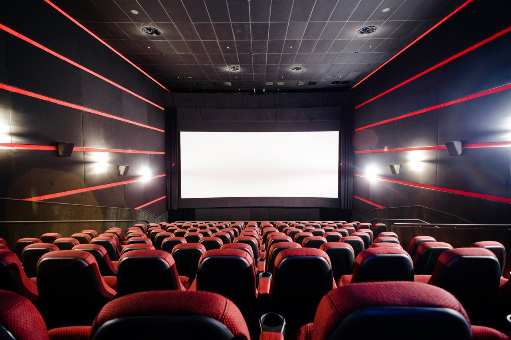

Мені не қызықтырады?

Кино
Кино әлемі мен үшін қызығын жоғалытпайды. Актерлердің түсірім кезіндегі өмірлері өте қызық. Бір жарым немесе екі сағат түсірілген киноның артында үлкен еңбек жатыр. Кино қарап отырып, түсірілімдер кезін көрсеткенде басқа сезімде боласын. Актерлер араласындағы байланыс өте қызық көрінеді. Маған бұрыннан кино мен фильм қараған ұнайды. Қорқынышты фильмдерді қарағанды ұнатамын. Бұдан бөлек мультфильмдер мен аниме қараған ұнайды. Аниме қазіргі кезде өз танымалдылығын жлғалтпайды. Қазіргі уақытта түрлі тақырыптар бойынша қалаған мультфильмдер, кино және анимелер көруге болады.
Психология
Психологиямен қазіргі уақытта көп адамдар айналысуда. Бұл бағытқа қызығушылығым бір жыл бұрын басталды. Түрлі психологтар кітабын оқу арқылы түрлі мәліметтер алып, өзімді түсіне бастадым. Қазіргі таңда бұл сфера адам өмірі бойынша көп рөл ойнауда. Сол себепті психология саласы мені қазіргі кезде қатты қызықтыруда.